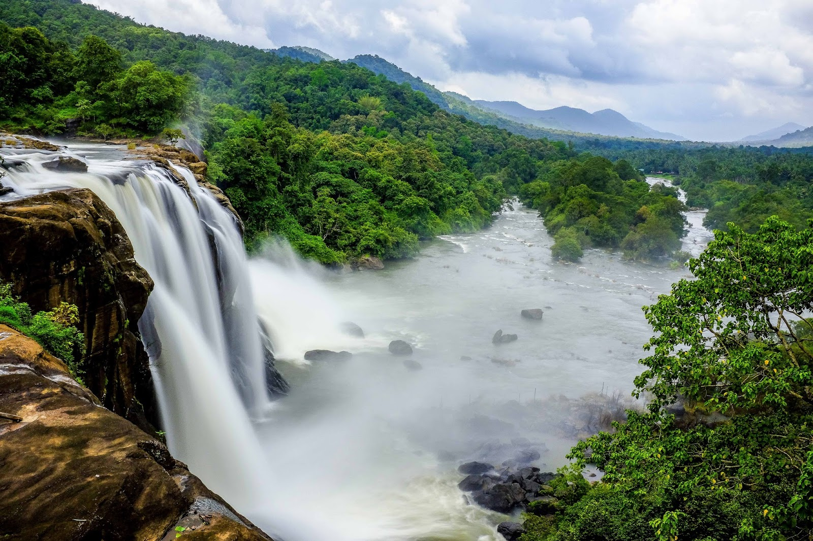

Valparai, located 110 km from Coimbatore, is a hidden paradise in the Western Ghats. Unlike Ooty, Valparai is less crowded and is known for its pristine tea plantations, wildlife, and tranquil surroundings. The road to Valparai is an adventure in itself, with 40 hairpin bends offering thrilling turns and spectacular views of the Aliyar Dam and Anamalai Hills. Valparai is part of the Anamalai Tiger Reserve, home to diverse wildlife, including elephants, leopards, Indian bison (gaur), lion-tailed macaques, and the endangered Nilgiri Tahr. Birdwatchers can spot hornbills, Malabar whistling thrushes, and numerous endemic species. Some must-visit places in Valparai include: Aliyar Dam – A huge reservoir offering scenic beauty, picnic spots, and boating facilities. Sholayar Dam – The second deepest dam in Asia, offering breathtaking views of surrounding valleys. Nallamudi Viewpoint – A panoramic viewpoint that offers an aerial view of deep valleys and waterfalls, perfect for sunrise and sunset views. Monkey Falls – A beautiful natural waterfall, ideal for a refreshing bath and surrounded by dense forests. Tea Estates & Bungalows – Valparai is dotted with British-era tea bungalows and factories, where visitors can experience the colonial charm and history of the region. With its untouched beauty, fresh mountain air, and wildlife sightings, Valparai is an excellent escape for nature lovers, photographers, and adventure seekers.
